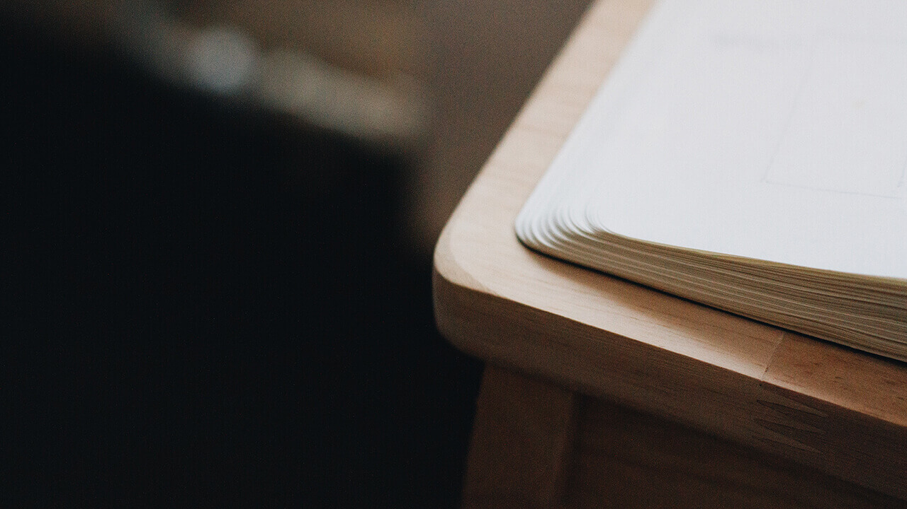
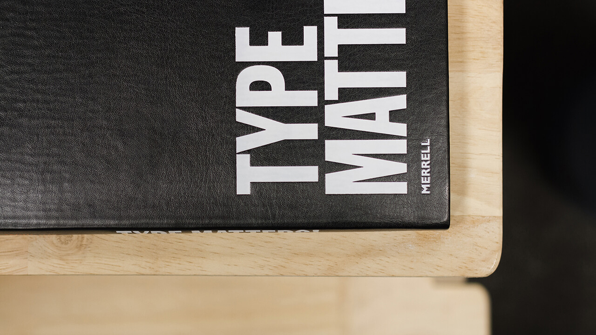
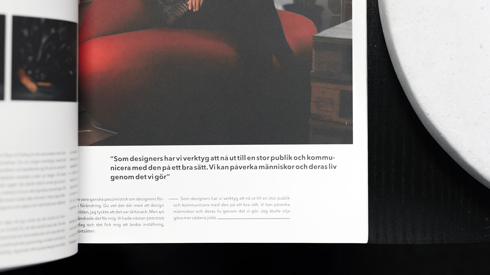

To make this semester work, having the right priorities at the right time has been crucial. The majority of my time is spent working as a designer and web developer, pushing university assignments, research and deadlines to the afternoons and weekends. This worked surprisingly well in my opinion, and I could seamlessly tune in for important lectures over Skype – even at work.Jump to the sketchbook video to experience how I plan my work
Similarly to my previous semester, I follow a priority-list. The dissertation-module alone proposes 222 student-managed learning hours. With an additional 64 hours suggested for my portfolio workshop module, proper planning was essential. This was elevated by the fact that I didn’t have students stressing out about deadlines around me – and thus peer pressure to do work was simply nonexistent. A strange experience, sure, but certainly affected my stress-levels.
Average week
Mondays:
- Work
- Traffic meeting to outline the coming week
- Review of the previous week
- Design chat and design inspiration
- List hours at the end of each day to keep track of completed work
Tuesday:
- Work
- Listing hours
- University work
Wednesdays:
- Work
- Listing hours
- University work
- Preperation for lectures
Thursdays:
- Work
- Listing hours
- University work
- Lecture over Skype
- University assignments (evening)
Fridays:
- Work
- Listing hours
- Reflect over the week and take some notes for the notebook
- Rough plan for next week
Weekends:
- Catch up if I'm behind on work
- Catch up if I'm behind on university work
- Relax if I'm on track
Work hours
I track my hours at work through the XS Office web application. It’s in Norwegian, but the words to look out for are “ekstern” and “intern”, which is external work (for clients) and internal work (for the company itself or anything not related to a client).
Other keywords to look out for would be “møte”, which is referring to meetings (external and internal), and “kompetanseheving”, which is usually referring to lectures or dedicated university hours. My average week is just below 40 hours, but the occasional important deadline can definitely push this higher – like week 43, which was just above 70 hours.
How I work
This has not changed much from my previous semester either, and the process is still very organic. The articles I wrote on sketching still applies to my workflow, but the process is now heavier on client feedback and understanding their needs. I still capture the majority of my thoughts in the form of text, lists or mind-maps – which is working quite well for me. You can gather a brief overview of how I sketch out my thoughts in the sketchbook video.
From there, it very much depends on the client and their needs. They may or may not request design as a part of the product, and if they do there is a whole process of research and mockups before we build anything. If they don’t, we merely publish their content through a framework or established theme.
Development
I develop my sites locally with Wordpress and MAMP, or Jekyll – depending on the purpose. Jekyll works well for relatively static websites, and Wordpress is our CMS of choice when the client(s) would like to update the site themselves post-launch. I develop smaller sites from my personal boilerplate, which I have adapted to Wordpress-development as well – with CSS flexbox for layouts.
I have moved on from Grunt to Gulp as my build-system of choice. This compresses all my images and vector graphics, processes Sass, minifies and concatenates JavaScript and CSS files, before finally pushing everything to a distribution-folder. The system will also automatically reload and synchronize scrolling across every browser/device on the same network through BrowserSync – which allows for effecient debugging.With BrowserSync, I can navigate and scroll my site on my Mac, and connected devices will follow the scroll-position and clicks with next to no delay.
I use WebPagetest to catch performance-bottlenecks and analyse performance from anywhere in the world. I also run the site through PageSpeed Insights to check mobile performance. SEO is also a part of the process. This is usually while I test the social features of the site, which is run through Facebook’s Open Graph Object Debugger.
Finally, I transfer the database if we’re developing for Wordpress, and upload the live new site to the server.
I have yet to implement Git into my everyday projects, and still merely use it for my personal work (like the site you’re on right now), but I intend to encourage the use of version control at work later down the line.
Sketchbook from Magnus Skare on Vimeo.
Sketchbook
As I couldn’t physically submit my sketchbook, I had to submit it digitally – and as I had no time to scan my entire sketchbook, I made a short video instead. I’m bilingual, but the notes are primarily in Norwegian. The video ends with the notes for the video itself and a picture of how it was shot, which I thought was a clever touch.
I would highly recommend watching it in HD for a closer look and the ability to actually read the notes, as embded videos will only be SD.
Inspiration and design research
While each client project is unique in terms of what kind of research we do, I can give you a general idea of where I find inspiration and what influences my work.
The web is famously claimed to be mostly typography, and I find a large amount of inspiration from physical magazines and books. Monocle, Offscreen and the printed version of Aftenposten’s A-magasinet, just to name a few, are all outstanding approaches to layout and typography in my opinion. I also picked up a copy of Type Matters by Jim Williams – the book is a few years old now (2012), but still very useful and relevant in my opinion. I appreciate the simplicity of visual hierarchy based solely on typography and photography in magazines and newspapers, and I often aim to translate this to the responsive web.
I enjoy Scandinavian design and the work from outstanding individuals like Erik Spiekermann, Dieter Rams and Andrew Kim. They inspire me on a regular basis to not over-design things.
I also think it’s important to look outside the design industry for inspiration. Tobias van Schneider wrote a great article on the topic, which essentially encourages us to not be trapped inside our comfort-zone.
Web design inspires web design, and I obviously find inspiration through the Internet. These are a few of my favourite sites for inspiration, along with a variey of Tumblr-blogs, Instagram accounts, design blogs and other websites:
I appreciate simplicity over minimalism. We make things too complicated, and I believe simplcity is often ignored in favour of flashy features. Simplicity can also be translated into code. Code excellence isn’t when there’s nothing more we can add, but when there’s nothing more we can remove. Ship honest and good products, make them maintainable and don’t take shortcuts. These are high demands when the deadline is approaching, but I believe it is worth keeping in mind along the way.
Reflection & conclusion
My workflow is currently somewhat dictated by company deadlines, but it’s still very organic – from idea to final product. I do believe the ability to adapt to a team and their routines to be crucial for employability, but at the same time I think it is important to add something of your own as well. For me, that was a modern web development workflow.
In terms of time management, Riktig Spor has been very flexible and understanding, giving me as much time as needed to attend lectures, develop this portfolio, work on my dissertation proposal and professional portfolio.
I believe the web development process will improve over time, which is a journey I am looking forward to.